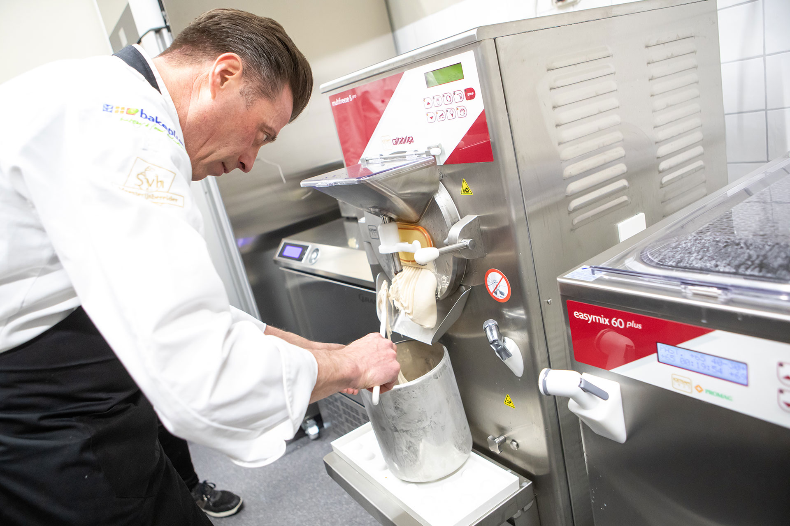
Feestelijke ijstaarten
Voor elke gelegenheid maken we op bestelling feestelijke ijstaarten van ons ambachtelijke ijs. Zeker rond de feestdagen een populair nagerecht, en echt een blikvanger op tafel.
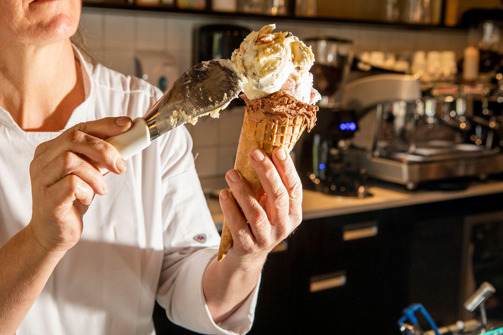
Ambachtelijk ijs & patisserie · Hof 78, Bergeijk
In onze ijssalon in het hartje van Bergeijk maken we Italiaans schepijs van verse melk uit de lokale boerderij. Kom rustig zitten voor een coupe, vers gebak, een high tea of gewoon een heerlijke koffie.
Di t/m zo open van 11:00 tot 18:00, maandag gesloten
We bereiden dagelijks vers room- en sorbetijs in onze eigen, zichtbare keuken. Hoorntje of bakje: jij kiest. Dit zijn de smaken die we op dit moment serveren.
De Coupe Sorbet kan ook lactosevrij of vegan. Vraag in de zaak gerust naar de smaken van vandaag.
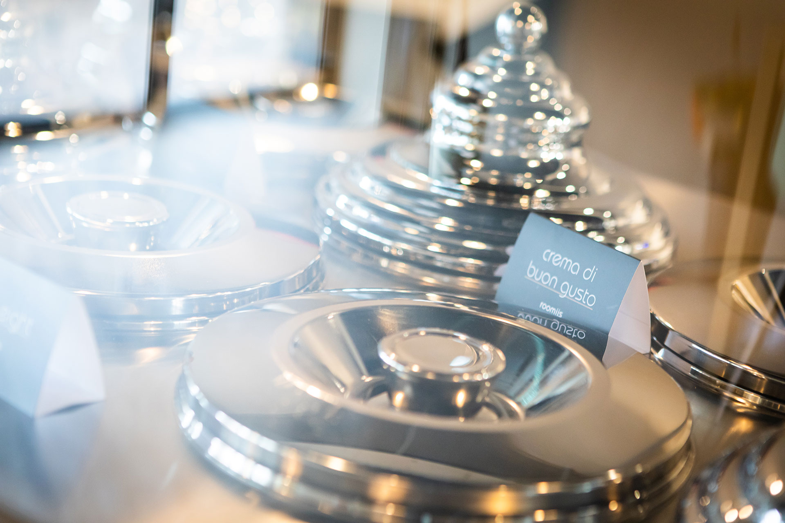
Na het draaien gaat ons ijs in de Pozetti-vitrine: afgedekte bakken die het ijs onder ideale omstandigheden op een constante temperatuur houden. Dat geeft een prettiger mondgevoel en een veel intensere smaak. En de vitrine is ook nog eens stukken zuiniger dan een open vitrine.
Al onze coupes en milkshakes maken we met ons eigen ijs.
De originele kaarten als pdf: coupekaart en drankkaart.
Naast ons dagelijks vers bereide schepijs geniet je bij ons ook van huisgemaakte taarten en wafels. Combineer het met échte Italiaanse koffie, een van onze zelfgemaakte yoghurts, een verse smoothie of een écht romige milkshake.
Ijs eten is lekker, maar ijs máken is minstens zo leuk. Daarom hebben we voor groepen en teams een workshop in elkaar gezet, gecombineerd met een ijsproeverij. Bel of app ons voor de mogelijkheden.
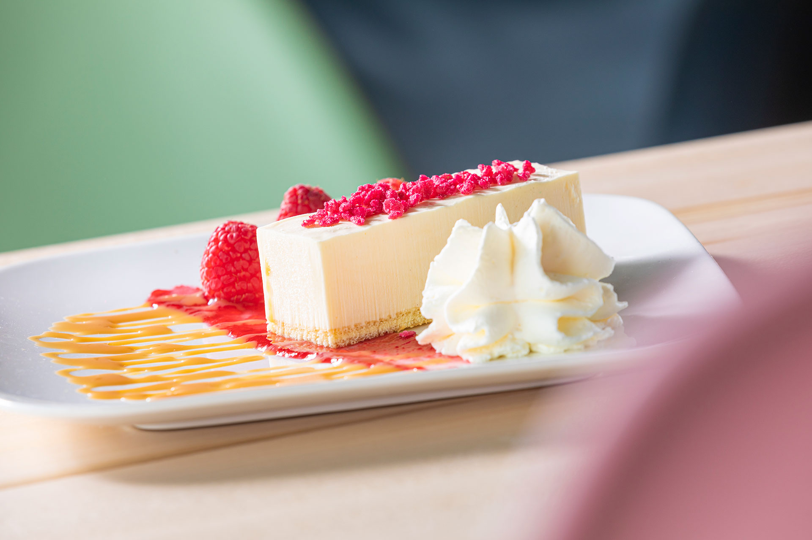
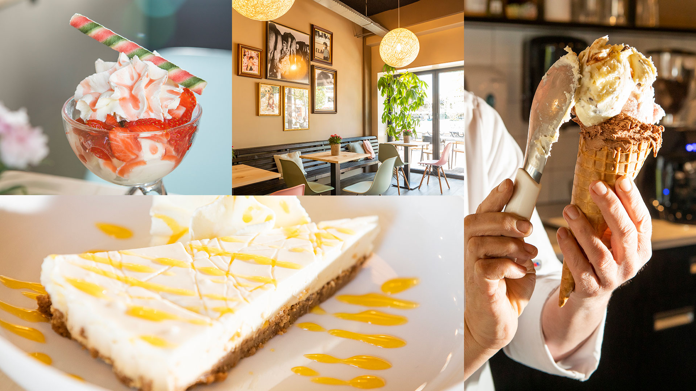
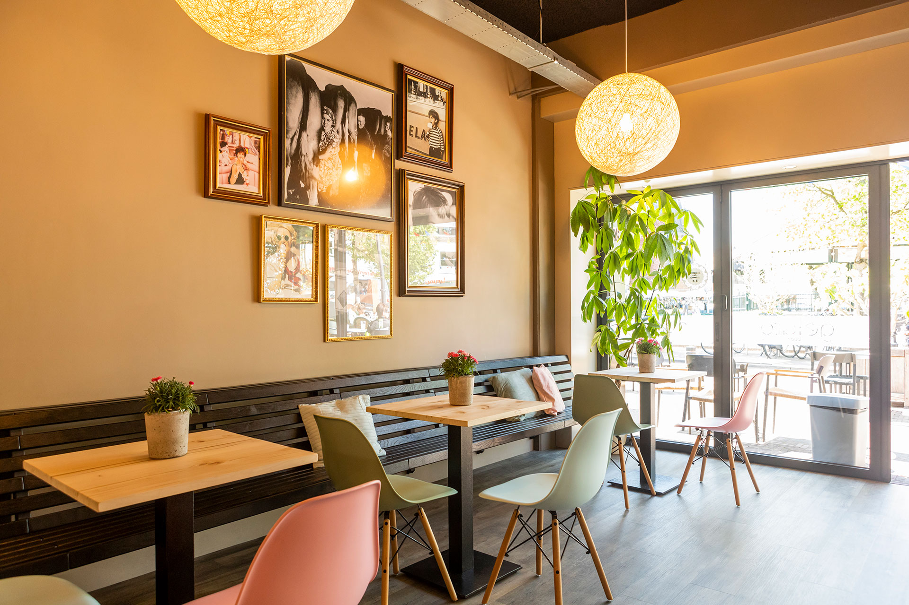
€ 27,00 per persoon
Kun je soms ook niet kiezen tussen zoet en hartig? Met ons High Tea-arrangement verzorgen we een proeverij met verse hapjes uit eigen keuken, met onbeperkt koffie en thee. Erg leuk voor bijvoorbeeld een babyshower.
IJstaarten, cadeaukaarten en ijs op locatie bestel je eenvoudig door te bellen, te mailen of een WhatsAppje te sturen.

Voor elke gelegenheid maken we op bestelling feestelijke ijstaarten van ons ambachtelijke ijs. Zeker rond de feestdagen een populair nagerecht, en echt een blikvanger op tafel.
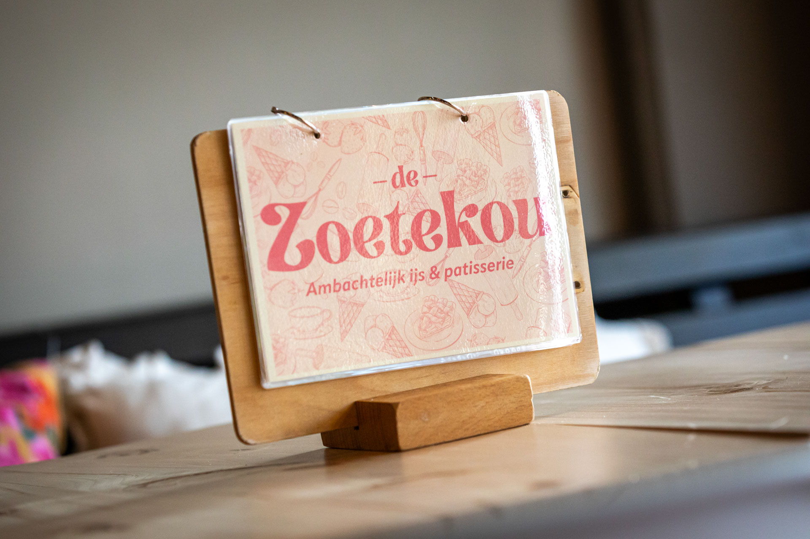
Om iemand te bedanken, te feliciteren of gewoon te verrassen: onze sierlijke cadeaukaarten zijn leuk om te geven en nog leuker om te krijgen. Op bestelling maken we er ook complete pakketjes omheen.
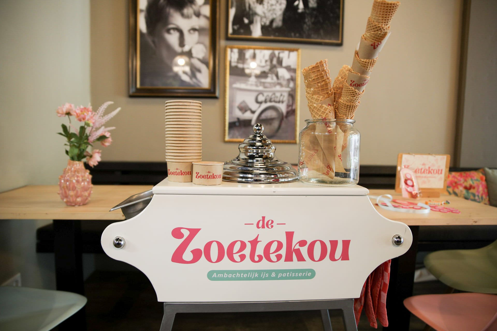
Voor feestjes thuis en bij bedrijven verzorgen we ijs en gebak: een sweets-table voor je bruiloft, kleine hapjes voor het bezoek of onze mobiele ijsbar. Zo'n 20 tot 50 personen genieten dan van 2 ijssmaken naar keuze. Vraag ons naar prijs en mogelijkheden.
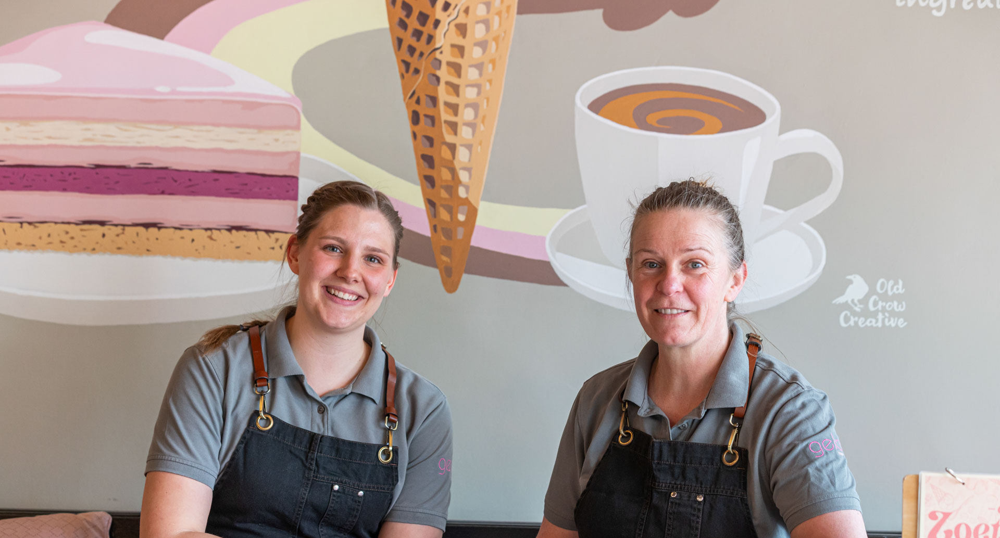
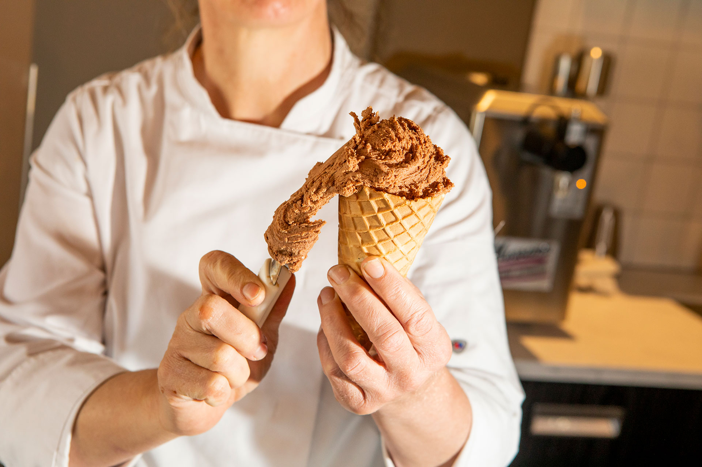
Op alle vlakken streven we naar de beste smaakbeleving voor onze gasten. Het begint met verse melk die we zelf pasteuriseren. Alle losse ingrediënten voegen we zelf toe, tot een (h)eerlijke ijsmix. Geen poeders en geen kunstmatige kleur-, geur- en smaakstoffen.
Samen met SVH Meesterijsbereider Arco Kruik ontwikkelen we onze smaken en zorgen we dat de kwaliteit constant hoog blijft.
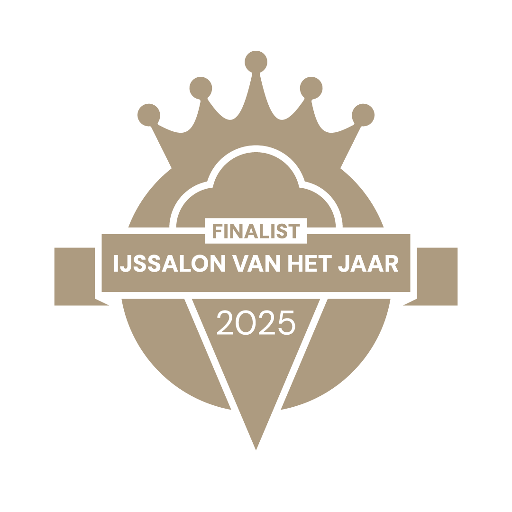
Finalist IJssalon van het Jaar 2025
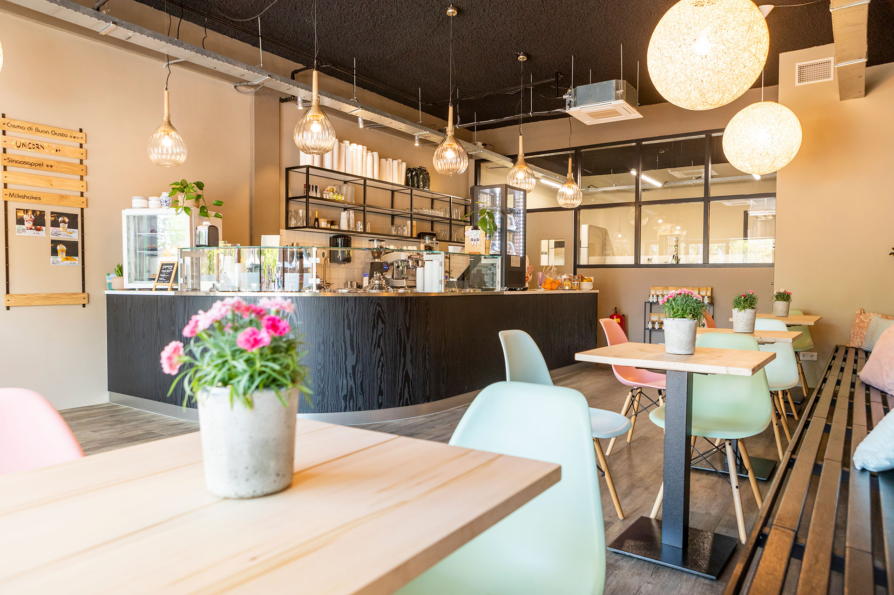
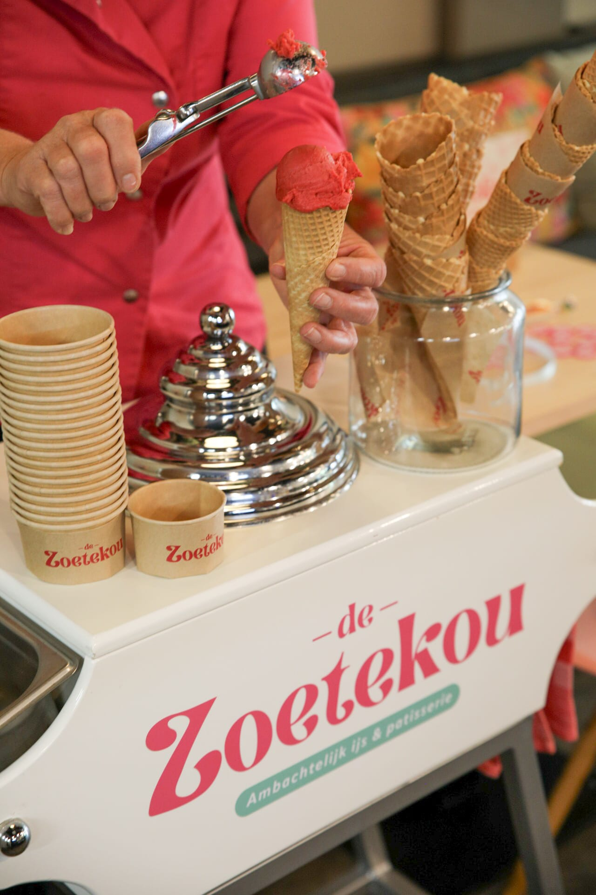
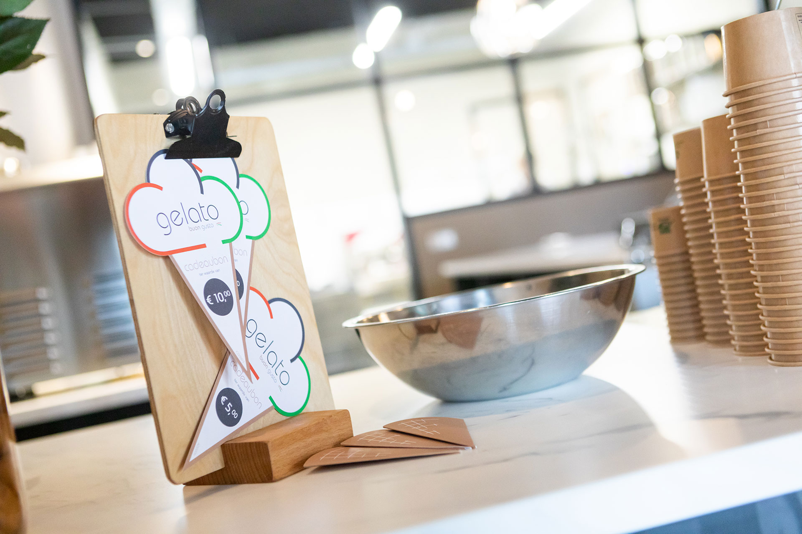
Hof 78
5571 CC Bergeijk
+31 6 12 20 44 84
WhatsApp
info@dezoetekou.nl
Heb je een vraag, suggestie of specifieke wens? Neem contact op, we denken graag mee.
| Maandag | Gesloten |
|---|---|
| Dinsdag | 11:00 – 18:00 |
| Woensdag | 11:00 – 18:00 |
| Donderdag | 11:00 – 18:00 |
| Vrijdag | 11:00 – 18:00 |
| Zaterdag | 11:00 – 18:00 |
| Zondag | 11:00 – 18:00 |
Afwijkende openingstijden en feestdagen: momenteel geen uitzonderingen.